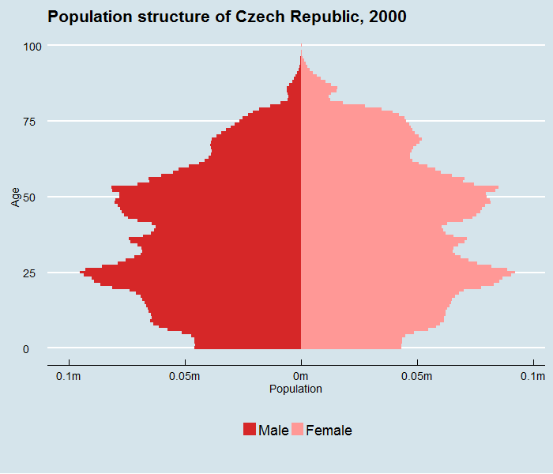

I just adapted the code from here to harvest Czech Republic population estimates.

library(idbr) # devtools::install_github('walkerke/idbr')
library(ggplot2)
library(animation)
library(dplyr)
library(ggthemes)
idb_api_key("YOUR API CODE HERE")
male <- idb1('EZ', 2000:2050, sex = 'male') %>%
mutate(POP = POP * -1,
SEX = 'Male')
female <- idb1('EZ', 2000:2050, sex = 'female') %>%
mutate(SEX = 'Female')
czechrep <- rbind(male, female) %>%
mutate(abs_pop = abs(POP))
# Animate it with a for loop
saveGIF({
for (i in 2000:2050) {
title <- as.character(i)
year_data <- filter(czechrep, time == i)
g1 <- ggplot(year_data, aes(x = AGE, y = POP, fill = SEX, width = 1)) +
coord_fixed() +
coord_flip() +
geom_bar(data = subset(year_data, SEX == "Female"), stat = "identity") +
geom_bar(data = subset(year_data, SEX == "Male"), stat = "identity") +
scale_y_continuous(breaks = seq(-101000, 101000, 101000/2),
labels = paste0(as.character(c(seq(0.1, 0, -0.05), c(0.05, 0.1))), "m"),
limits = c(min(czechrep$POP), max(czechrep$POP))) +
theme_economist(base_size = 14) +
scale_fill_manual(values = c('#ff9896', '#d62728')) +
ggtitle(paste0('Population structure of Czech Republic, ', title)) +
ylab('Population') +
xlab('Age') +
theme(legend.position = "bottom", legend.title = element_blank()) +
guides(fill = guide_legend(reverse = TRUE))
print(g1)
}
}, movie.name = 'czechrep_pyramid.gif', interval = 0.1, ani.width = 700, ani.height = 600)